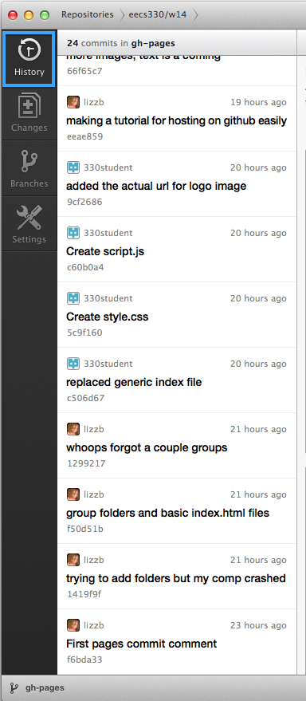

Ready for more?
I'll show a brief overview of using the GitHub client for Mac. Personally I'm running 10.8, but the application interface should look the same across OS versions. (I know it looks different on Win7 vs Win8, though)

Notice differences in the nature of the commit.
For lines added to the code, the line will be highlighted in green, and a little plus sign displays at the left.
So for an entirely new file, everything will be highlighted green.
For lines removed the code, the line will be highlighted in red, and a little minus sign displays at the left.
So for deleting a file, everything will be highlighted red.
You might think, but wait, we didn't delete the file, we just MOVED it. Or maybe even just renamed it!
In either case, the file is now considered "different" to version control. But you don't really need to worry about this for now.
Since this file was modified (we replaced the existing index.html with our custom index.html), some of the same lines appeared in the file "before" and "after" our changes. You can see in this image that lines that have not been changed are uncolored, and you can clearly see where things were added/removed by the coloring. And, the interface only shows you relevant pieces of code - i.e. code that changed, so you don't have to scroll through some file to find minor adjustments. This can be very useful for seeing incremental changes that either you or others on your project have made.